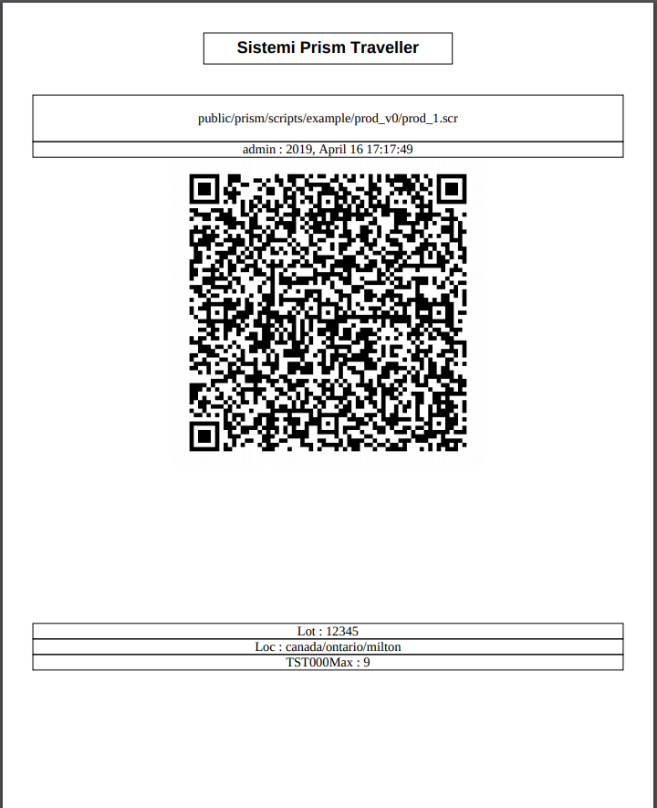
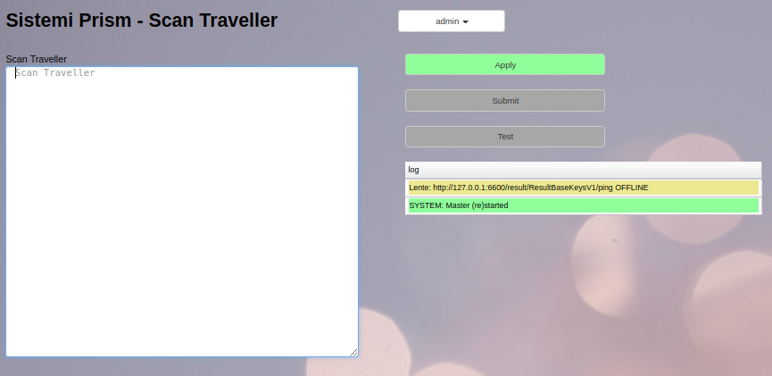

Travellers¶
Travellers are 2D bar codes printed on paper than can configure Prism to run a script with certain substitution parameters.
Travellers are used to simplify setting up and operating Prism by any User (operator) that may not be familiar with the production process.
Travellers can only be created by users with the ConfigMan role.
The image below shows the Test Config view, a script has been selected and the parameters selected, at this point the Traveller button turns Green indicating it can now be pressed.

Pressing the Traveller button will pop up a new tab in the browser, similiar to the following,
The traveller shows the User that created it, the time and date, and the parameters used when it was created.
This is a PDF document. Use the browser functions to either Print or Save this document and pass it along to the production floor.
Scanning¶
Travellers are scanned by the operator using most any bar code scanner set to emulate the keyboard.
Once the image is scanned, you Apply, Submit and the Test to proceed to the Test View.